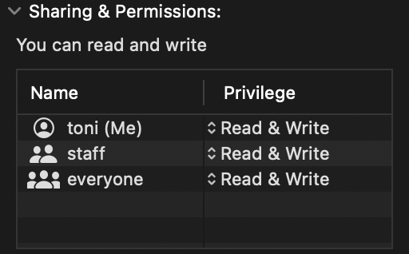

How to use a Raspberry as Time Capsule (MacOS)
Setup Raspberry Pi #
If you want to read about our basic Raspberry Setup: Here you go!
Prepare the external drive #
The most important thing is going to be our connected hard drive. I used a SSD connected via USB to the Pi. We need a drive that uses HFS+ or APFS. Otherwise, we cannot use it for Time Machine. Currently, there’s only a reliable read-only version for APFS on Linux. So, we are going to use HFS+ instead.
Please make sure you format your drive correctly and do not forget to give read and write permissions to everyone using “get info” on your Mac.

Mounting our Hard Drive #
After we connected your drive to the Pi, we need to mount it. Otherwise we cannot access it. The Format HFS+ is not native to Linux. So, we need to install it.
sudo apt-get install hfsprogs
After installing it, we need to find the name of our drive.
lsblk -f
The name of my drive is “sda2”. You’ll find yours looking at the format and the size.
Creating a Mount Point #
Before mounting a drive, we’ll need a mount point! Let’s create a directory. You can choose the path to your point as you like. I chose “/TM”
sudo mkdir -p /TM
Let’s mount our drive!
sudo mount -t hfsplus -o force,rw /dev/name_of_your_drive /your_mount_point
Unfortunately, the drive is not yet mounted permantly. Let’s do that! Let’s find the “PARTUUID” of your drive fist.
sudo blkid /dev/sda2
Let’s open the following:
sudo nano /etc/fstab
Add this line with your “PARTUUID” to the bottom of the file.
PARTUUID="your_partuuid" /your_mountpoint hfsplus force,rw,user,auto 0 0
Now, our drive will be mounted after every boot of the pi! 🤯
Preparing everything for Time Machine #
Before the can access the drive from our Mac, we need couple of additional tweaks.
Install Samba and Avahi #
Samba is used for the file server.
Avahi emulates a Time Capsule and our drive get’s automatically discovered by MacOS. 🔎
Let’s install everything on our Raspberry Pi.
sudo apt-get install samba avahi-daemon
Creating a new user on the Pi #
Let’s add a user “timemachine” for dealing with all our Time Machine stuff!
sudo adduser timemachine
After creating the user, you’ll be prompted to enter a password for the new user on your Raspberry Pi.
Configurating Samba #
We need to define a password for Samba. I used the same password for convenience.
sudo smbpasswd -a timemachine
The need to define same details for Samba. “Time Machine” will be the name for our server.
sudo nano /etc/samba/smb.conf
Add these lines to end of the file:
[Time Machine]
comment = Backups
path = /your_mount_point
valid users = timemachine
read only = no
vfs objects = catia fruit streams_xattr
fruit:time machine = yes
The changes will be affective after reloading Samba!
sudo service smbd reload
Configurating Avahi #
Allmost done! 🙂
We need to configure Avahi. Lets open the following file:
sudo nano /etc/avahi/services/samba.service
The need to copy all the following into this file:
<?xml version="1.0" standalone='no'?><!--*-nxml-*-->
<!DOCTYPE service-group SYSTEM "avahi-service.dtd">
<service-group>
<name replace-wildcards="yes">%h</name>
<service>
<type>_smb._tcp</type>
<port>445</port>
</service>
<service>
<type>_device-info._tcp</type>
<port>9</port>
<txt-record>model=TimeCapsule8,119</txt-record>
</service>
<service>
<type>_adisk._tcp</type>
<port>9</port>
<txt-record>dk0=adVN=Time Machine,adVF=0x82</txt-record>
<txt-record>sys=adVF=0x100</txt-record>
</service>
</service-group>
Let’s reload the service, so the changes will be affective:
sudo service avahi-daemon reload
Now, your raspberry should be recognized as a Time Capsule!

Time Machine, here I come! 🚀
Optional: Read only and Backup the Pi #
Read only #
You can make your Raspberry Pi read only, so nothing can be changed. That should increase your reliability of the system and the longevity of your SD card. The lifetime of SD cards are mainly dependent on the write cycles they endure.
You will find the setting here:
sudo raspi-config
Go to “Performance Options” and “Overlay File System”.
Backup #
The most simple way to backup your Pi is just to copy all the files on the SD card. You could store the files on your Mac.
Conclusion #
We’ve seen how to emulate a Time Capsule using a Raspberry Pi. Due to the small size of the Raspberry Pi, it’s a very portable backup solution, which can be taken everywhere!